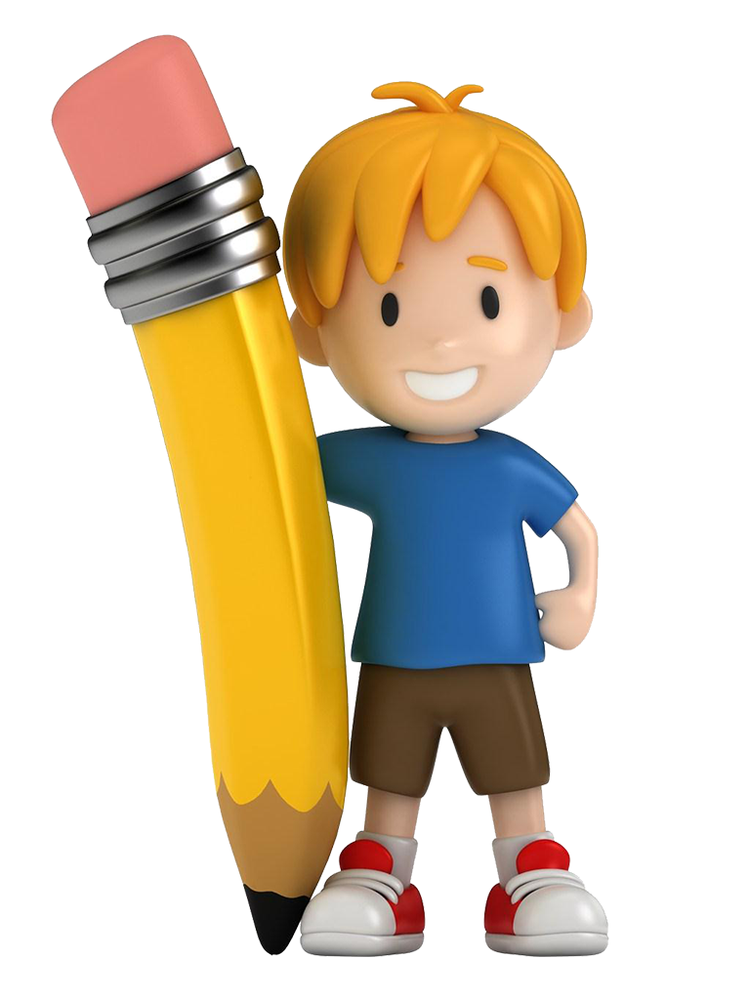

O que é a Pordata Kids?
Kiduca é um site que contém jogos educativos online gratuitos para crianças, desde os 6 aos 10 anos, eventualmente acessível às outras faixas etárias. Os jogos interativos e pedagógicos de Kiduca são atividades de alfabetização interativas de diferentes tipos: jogos em português, inglês, jogos de matemática, memória, jogos de tabuleiro, e até vídeos educativos.
Estes jogos didáticos e vídeos educativos podem ser usados em sala de aula e em casa para introduzir, reforçar ou motivar o processo de aprendizagem.
Por que é que este site pode ser útil para os Alunos?
Tem uma linguagem simples, com um visual adequado ao público infantil.
Está preparado para telemóveis, tablets e, claro, computadores!
Todos os dados apresentados são simples, mas credíveis, provenientes de fontes oficiais.
 As crianças encontram na Kiduca a resposta a inúmeras perguntas através de animações, jogos, vídeos e músicas educativas.
As crianças encontram na Kiduca a resposta a inúmeras perguntas através de animações, jogos, vídeos e músicas educativas.
É uma excelente ferramenta educacional com informação de vários assuntos da atualidade e de aprendizagem.